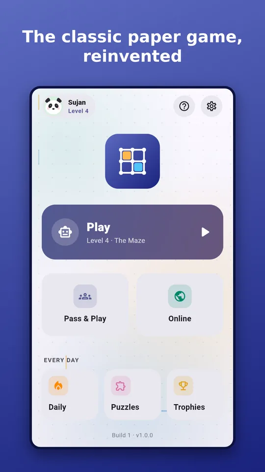
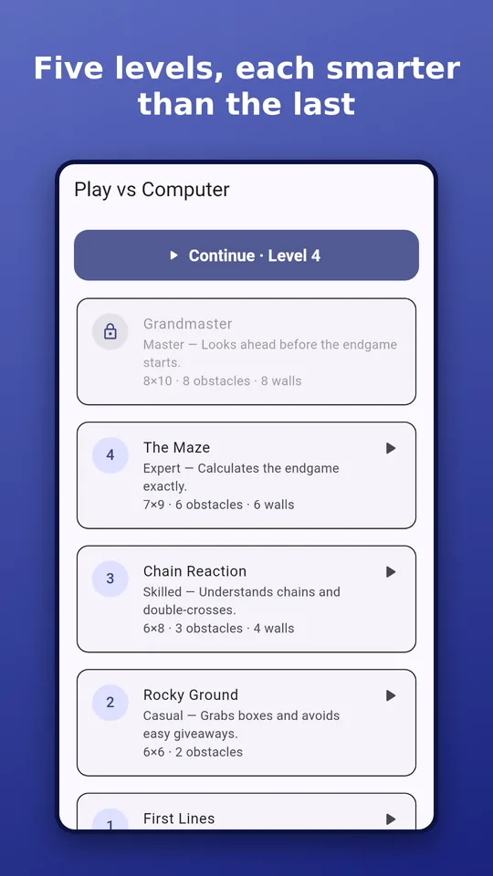
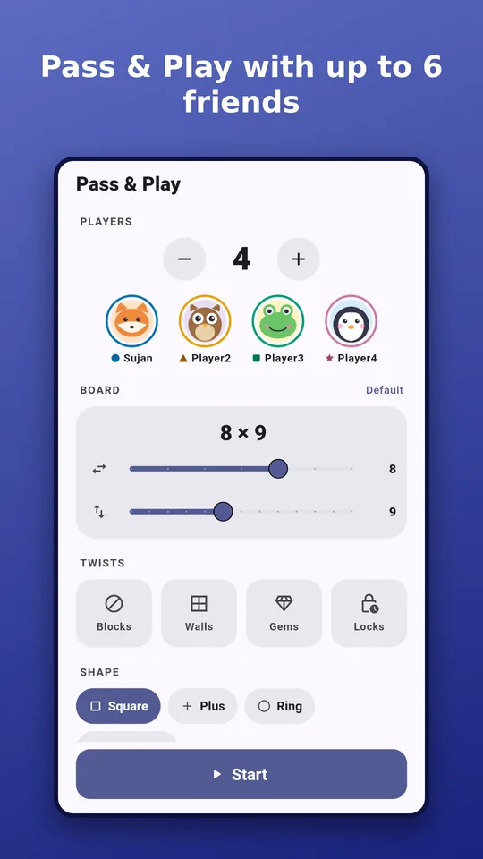
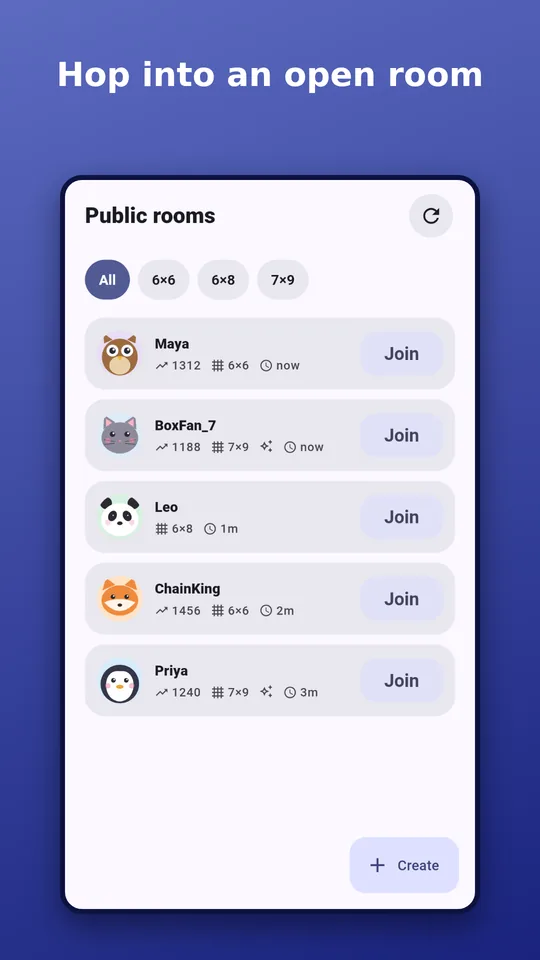

At a glance
- PriceFree, no ads
- In-app purchasesNone
- Players1 to 6
- Works offlineYes
- OnlineRandom, private, public, ranked
- PlatformAndroid (Google Play)
- Computer levelsBeginner to Master
- Made bySujan Shrestha, Nepal
How to play dots and boxes
- Start with a grid of dots. Take turns drawing one line between two neighbouring dots.
- Close the fourth side of a box and it's yours: write your mark in it and draw another line.
- When every line is drawn, the player with the most boxes wins.
In the app, swipe between two dots or tap the gap. Boxes fill with your colour, and the score updates as you play.
How to win at dots and boxes
- Don't draw the third side of a box early on: your opponent takes it and moves again.
- Count the chains. When the safe moves run out, the board splits into chains of boxes. Whoever has to open the first long chain usually loses.
- Use the double-cross. When you take a long chain, leave the last two boxes for your opponent. They take two, then must open the next chain for you.
- Sacrifice to keep control. Giving away a short chain can make your opponent open the long ones.
The app's Chain School teaches these ideas in twelve short puzzles.
What's in the game
Play the computer
Five levels, from a friendly Beginner to a Master that calculates the endgame exactly. Endless levels add obstacles, walls, gem and bomb boxes, locked lines and shaped boards.
Daily puzzle and stars
A fresh endgame each day, the same for everyone. Earn up to 3 stars, keep your streak and climb Today's stars.
Pass & Play
2 to 6 players on one phone, no internet needed. Pick the board size, the shape and twists like gems and locked lines.
Friends, rooms and ranked
Private rooms with a 6-letter code, public rooms, friends and invites, ranked ratings and a leaderboard. The server checks every move, so nobody can cheat.
Chain School
Twelve puzzles that teach chains, sacrifices and the double-cross.
Paper, Chalkboard, Neon
Unlock board styles with trophies and switch between light and dark themes.
Screenshots




Questions
Is Dots & Boxes: Brain Duel free?
Yes. It is free on Google Play, with no ads and no in-app purchases.
Can I play dots and boxes online with friends?
Yes. Create a private room and share its 6-letter code, invite friends from your friends list, join a public room, or play a random opponent. Rooms take 2 to 6 players, and ranked games have ratings and a leaderboard.
Can I play dots and boxes offline?
Yes. Games against the computer, the daily puzzle, Chain School and Pass & Play for 2 to 6 players on one phone all work without internet.
Is there a dots and boxes game against the computer?
Yes. There are five computer levels, from Beginner to Master, which calculates the endgame exactly, plus endless levels that add obstacles, walls, gem and bomb boxes, locked lines and shaped boards.
Is it on iPhone?
Not yet. Dots & Boxes: Brain Duel is available for Android on Google Play.
Does the app collect personal data?
No email, phone number or location is needed. Offline play sends nothing off the phone, and online play uses an anonymous account you can delete at any time from Settings. Read the privacy policy.
Who invented dots and boxes?
The French mathematician Édouard Lucas first published the game in 1889, under the name La Pipopipette.